18-649 Scenarios and Sequence Diagrams
18649 Fall 2015
Group 12 - Shepard Emerson (semerson), Tom Eliot (tke), Daniel Gorziglia (dgorzigl), Daniel Haddox (dhaddox)
Scenarios:
Use Case 1: Passenger Makes
A Hall Call
Scenario 1A: Passenger
arrives at a hallway while elevator is elsewhere.
Pre-Conditions:
- All doors are closed.
- Car is at another floor, below the passenger's floor
- There are no calls in the system.
- HallLight[f,b,d] for passenger's desired direction d is off.
- Dispatcher's CurrentDirection is None
Scenario:
- Passenger pushes HallCall[f,b,d]
- Passenger sees that corresponding hall button light turns on.
- Dispatcher sets CurrentDirection to Up
Post-Conditions:
- Elevator has not yet arrived at the passenger's floor.
- All doors are closed.
- There is one call in the system, the Passenger's HallCall
- HallLight[f,b,d] for passenger's desired direction d is on.
- Dispatcher's CurrentDirection is Up
Sequence Diagram:
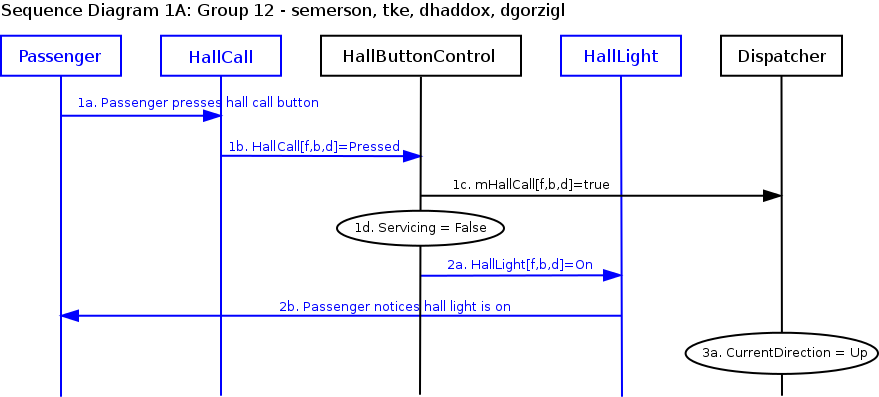
Scenario 1B: Passenger
arrives at a hallway when elevator is already there and the car is
traveling in the same direction as desired by passenger.
Pre-Conditions:
- Car is at same floor as passenger.
- Car is traveling in same direction d as desired by passenger.
- All doors are closed.
- HallLight[f,b,d] for passenger's desired direction d is off.
Scenario:
- Passenger pushes HallCall[f,b,d]
- Passenger sees that corresponding hall button light turns on.
Post-Conditions:
- Car is at same floor as passenger.
- Car is traveling in same direction d as desired by passenger.
- All doors are closed.
- HallLight[f,b,d] for passenger's desired direction d is on.
Sequence Diagram:
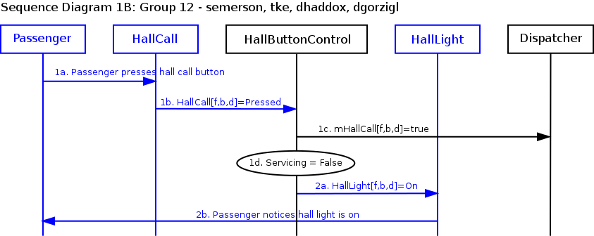
Scenario 1C: Passenger arrives at hallway when elevator is already there and the car is traveling in opposite direction as desired by passenger.
Pre-Conditions:
- Car is at same floor f as passenger.
- Car is traveling in opposite direction e as desired by passenger.
- All doors are closed.
- HallLight[f,b,d] for passenger's desired direction d is off.
Scenario:
- Passenger pushes HallCall[f,b,d]
- Passenger sees that corresponding hall button light turns on.
Post-Conditions:
- Car is at same floor as passenger.
- Car is traveling in opposite direction e as desired by passenger.
- All doors are closed.
- HallLight[f,b,d] for passenger's desired direction d is on.
Sequence Diagram:
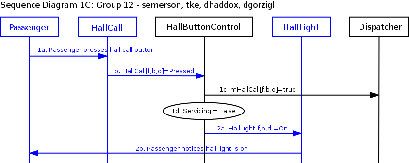
Scenario 1D: Passenger arrives at hallway when elevator is not already there, is traveling in same direction as desired by passenger, and is traveling toward the passenger.
Pre-Conditions:
- Car is not at same floor as passenger.
- Car is traveling toward the passenger's floor.
- Passenger's floor is currently reachable by the car.
- HallLight[f,b,d] for passenger's floor f and desired direction d is off.
- mHallCall[f,b,d] for passenger's floor f and desired direction d is false.
- Car is traveling in opposite direction as passenger's desired direction d.
- There is one call in the system, a hall call on floor g between the passenger's floor and the Dispatcher's CurrentFloor with desired direction d
- Dispatcher's Target is floor g and DesiredDirection d
Scenario:
- Passenger pushes HallCall[f,b,d]
- HallLight[f,b,d] lights up
- Dispatcher sets Target to f, and DesiredDirection to d.
Post-Conditions:
- Car is not at same floor as passenger.
- Car is traveling toward the passenger's floor.
- Passenger's floor is currently reachable by the car.
- HallLight[f,b,d] for passenger's floor f and desired direction d is on.
- mHallCall[f,b,d] for passenger's floor f and desired direction d is true.
- Car is traveling in same direction as passenger's desired direction.
- Dispatcher's Target is f and DesiredDirection is d.
Sequence Diagram:
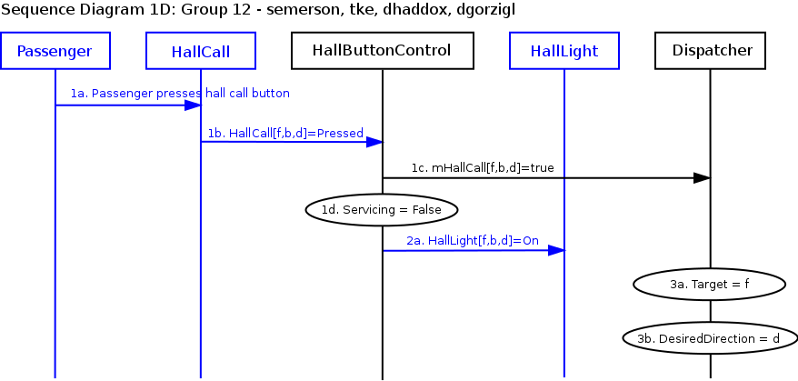
Scenario 1E: Passenger
arrives at a hallway when elevator is not already there, and the car is
traveling in opposite direction as desired by passenger.
Pre-Conditions:
- Car is not at same floor as passenger.
- Car is traveling toward the passenger's floor.
- Passenger's floor is currently reachable by the car.
- HallLight[f,b,d] for passenger's floor f and desired direction d is off.
- mHallCall[f,b,d] for passenger's floor f and desired direction d is false.
- Car is traveling in same direction as the passenger's desired direction.
- There is one call in the system, a hall call on floor g above the passenger's floor
- Dispatcher's Target is g
Scenario:
- Passenger pushes HallCall[f,b,d].
- HallLight[f,b,d] lights up.
- Dispatcher sets Target to f, and DesiredDirection to d.
Post-Conditions:
- Car is not at same floor as passenger.
- Car is traveling toward the passenger's floor.
- Passenger's floor is currently reachable by the car.
- HallLight[f,b,d] for passenger's floor f and desired direction d is on.
- mHallCall[f,b,d] for passenger's floor f and desired direction d is true.
- Car is traveling in same direction as passenger's desired direction.
- Dispatcher's Target is f and DesiredDirection is d.
Sequence Diagram:
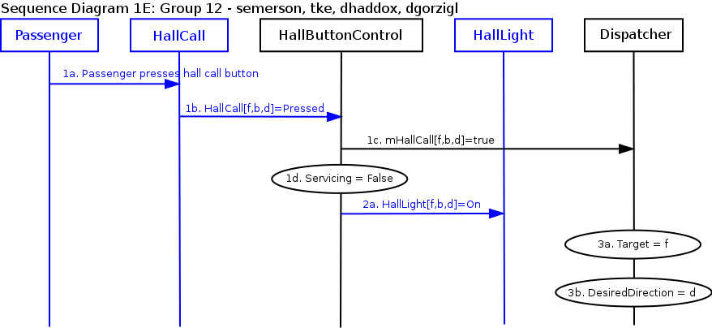
Scenario 1F: Passenger has made hall call and gets on the elevator when it arrives.
Pre-Conditions:
- The passenger has pressed the hall call for hallway b on floor f.
- HallLight[f,b] is on.
- The elevator just arrived at floor f.
- The passenger is in the hallway.
- The doors are all closed.
- mDesiredFloor.b is None
- The only call in the system is the passenger's hall call
- Dispatcher's CurrentDirection is Up
- Dispatcher's Hallway is None
Scenario:
- Dispatcher sets it's Hallway to b.
- Dispatcher sets it's CurrentDirection to None.
- Doors open, signifying that hall call is being serviced.
- Passenger enters elevator.
- Doors complete closing.
- Hall call is cleared and the hall light turns off.
- Dispatcher sets CurrentDirection to None
Post-Conditions:
- The passenger has pressed the car call for hallway b on floor f.
- HallLight[f,b] is off.
- The elevator just arrived at floor f.
- The passenger is in the car.
- The doors are all closed.
- There are no calls in the system.
- Dispatcher's CurrentDirection is None
- Dispatcher's Hallway is b.
Sequence Diagram:
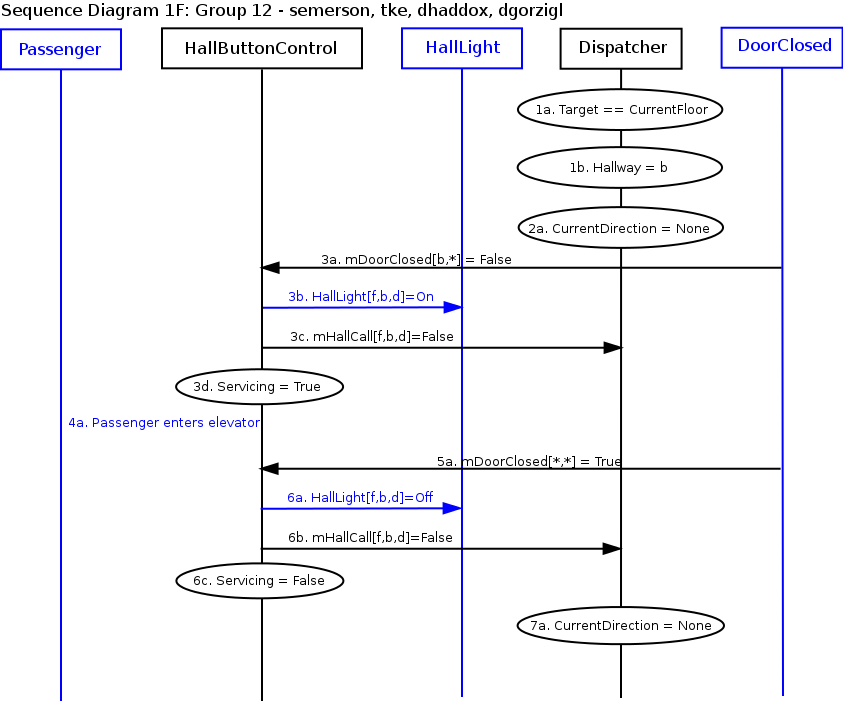
Use Case 2: Passenger Makes
A Car Call
Scenario 2A: Passenger
is in the car and elevator is not at the desired destination floor.
Pre-Conditions:
- Passenger is in the elevator.
- CarLight[f,b] for passenger's desired floor and hallway [f,b] is off.
Scenario:
- Passenger pushes CarCall[f,b]
- Passenger sees that corresponding car button light turns on.
Post-Conditions:
- Passenger is in the elevator.
- CarLight[f,b,d] for passenger's desired floor and hallway [f,b] is on.
Sequence Diagram:
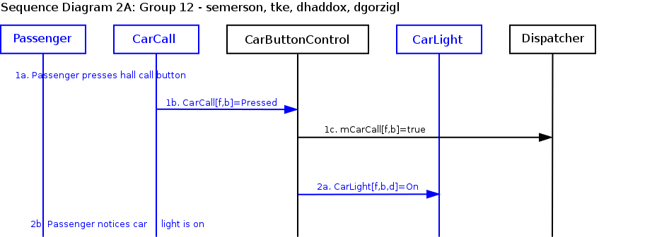
Scenario 2B: Passenger is in the car and the elevator has arrived at the passenger's desired floor, but passenger has not yet exited the car as the doors begin to close.
Pre-Conditions:
- The passenger has pressed the car call for hallway b on floor f.
- CarLight[f,b] is on.
- The elevator just arrived at floor f.
- The passenger is in the car.
- The doors are all closed.
Scenario:
- Doors open, signifying that car call is being serviced.
- Passenger tries to exit, but notices the doors are closing and backs off.
Post-Conditions:
- The passenger has pressed the car call for hallway b on floor f.
- CarLight[f,b] is off.
- The elevator just arrived at floor f.
- The passenger is in the car.
- The doors are closing.
Sequence Diagram:
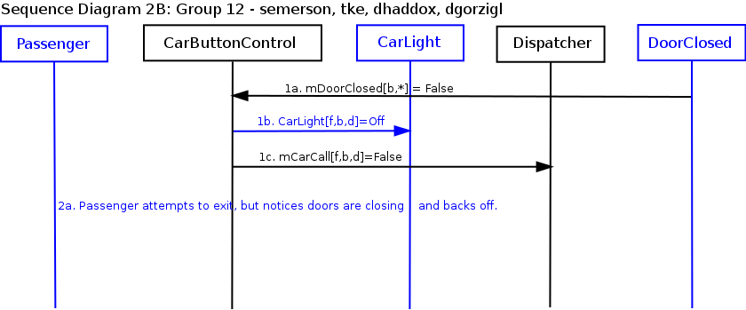
Use Case 3: Passenger Enters
Elevator
Scenario 3A: Passenger is waiting at a hallway for the elevator and has already pressed the hall call button.
Pre-Conditions:
- Car as just arrived at hallway [f,b] at which passenger is waiting.
- The hall call button for passenger's desired direction d has already been pressed, the hall light is on, and dispatcher is enabling pickup for hallway b.
- Dispatcher's CurrentDirection is ~d and DesiredDirection is d.
- Passenger is outside the car.
- All doors are closed.
- There are no other calls in the system.
Scenario:
- Doors open.
- Dispatcher sets CountDown to DelayTime
- Passenger gets on elevator, and presses a CarCall on floor g, which is in direction d of current floor f.
- All doors close, and Dispatcher decrements CountDown
- CountDown reaches zero and Dispatcher updates CurrentDirection to DesiredDirection d
Post-Conditions:
- Car is at hallway [f,b] at which passenger was waiting.
- The hall call button for passenger's desired direction d is off.
- All doors are closed.
- Dispatcher's CurrentDirection is d
Sequence Diagram:
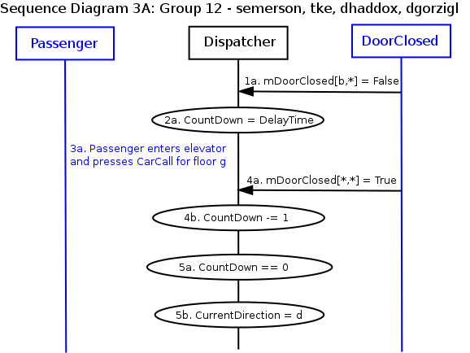
Scenario 3B: Passenger entering causes cable slip
Pre-Conditions:
- Car is at a floor.
- Passenger is outside the car.
- Doors in hallway h are open.
- The car is level.
Scenario:
- Passenger enters the elevator.
- Elevator slips in direction d.
- Elevator levels in opposite of d.
Post-Conditions:
- Car is at a floor.
- The passenger is in the car.
- Doors in hallway h are open.
- The car is level.
Sequence Diagram:
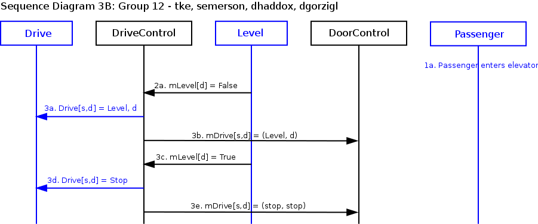
Use Case 4: Passenger Exits
Elevator
Scenario 4A: Passenger is in the elevator as it arrives at the
passenger's desired hallway.
Pre-Conditions:
- Passenger is inside the car, traveling to desired floor f
and hallway b.
- Car is traveling in direction d
- All doors are closed.
- Car Button for desired floor is turned on.
Scenario:
- Dispatcher desires pickup at hallway b
- Elevator stops
- Door[b,*] opens.
- Passenger exits elevator.
Post-Conditions:
- Elevator is stopped.
- Doors are both open.
- Passenger is outside elevator.
- Car Button for desired floor is on.
Sequence Diagram:
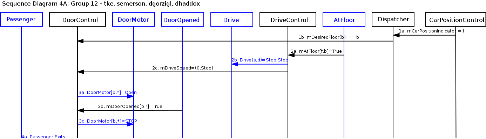
Use Case 5: Passenger
Triggers Door Reversal
Scenario 5A: Passenger
attempts to enter the car as the doors begin to close.
Pre-Conditions:
- Passenger is outside the car.
- Car is stopped at passenger's floor f and hallway b.
- At least one door[b,r] is open.
Scenario:
- Dwell time counter expires and DoorMotor[b,*] is set to Close.
- Passenger walks into elevator and a door reversal sensor is triggered.
- Doors[b,*] open again.
- Dwell time counter expires and DoorMotor[b,*] is set to Nudge.
- Doors[b,*] are closed.
Post-Conditions:
- Passenger is inside the car.
- Car is stopped at passenger's floor f and hallway b.
- Doors[b,r] are closed.
Sequence Diagram:
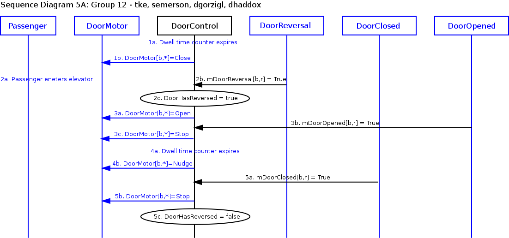
Scenario 5B: Passenger
attempts to exit the car as the doors begin to close.
Pre-Conditions:
- Passenger is inside the car.
- Car is stopped at passenger's floor f and hallway b.
- At least one door[b,r] is open.
Scenario:
- Dwell time counter expires and DoorMotor[b,*] is set to Close.
- Passenger walks out of elevator and a door reversal sensor is triggered.
- Doors[b,*] open again.
- Dwell time counter expires and DoorMotor[b,*] is set to Nudge.
- Doors[b,*] are closed.
Post-Conditions:
- Passenger is outside the car.
- Car is stopped at passenger's floor f and hallway b.
- Doors[b,r] are closed.
Sequence Diagram:
Use Case 6: Passenger Reads Car
Position
Scenario 6A: Passenger is in the car, which is moving from floor f past floor g (the next floor in the direction of travel)
Note: Recall that the Drive of the elevator we provided is
never commanded to go Fast, so the elevator only moves Slow and can
therefore stop right away when it sees the appropriate AtFloor[f,
b](True). Your solution will probably involve the Drive going Fast for
some portion of the trip, and the CarLevelPosition Sensor to plan when
to slow down. You will be given information on how to design a Fast
Drive in the upcoming projects. For Project 2, a Slow Drive will
suffice.
Pre-Conditions:
- Car is at hallway [f, b].
- All elevator doors are closed.
- Car is moving in hoistway.
Scenario:
- The car triggers CarLevelPosition
- CarPositionIndicator(g) set to g
- The passenger reads that the car is passing floor g
Post-Conditions:
- The car is at hallway[g,b]
- The elevator doors are closed
Sequence Diagram:
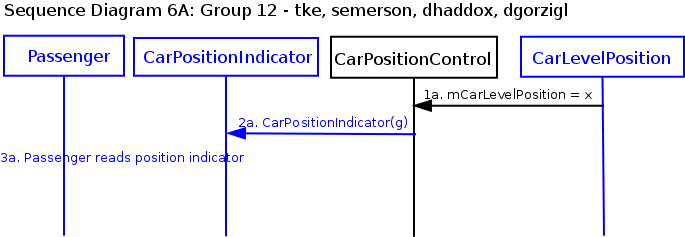
Use Case 7: Passenger Reads Car
Direction
Scenario 7A: Passenger is in
the hallway when the elevator arrives. Elevator opens doors when Dispatcher's
intended direction is Up or Down.
Pre-Conditions:
- Passenger is in hallway b on floor f
- Elevator is stopped at floor f, and AtFloor[f,b]
was last received as True.
- Dispatcher intends direction d and is enabling pickup in
hallway b.
- There is a call in direction d
- All doors are closed.
- Both Car Lanterns are off.
Scenario:
- Dispatcher enables pickup on floor f, hallway b with direction d
- Elevator doors start opening in hallway b on floor f
- The car lantern lights up indicating direction d
- Elevator doors finish opening
- Passengers sees that car lantern is lit indicating direction d
Post-Conditions:
- Passenger is in hallway b on floor f
- Elevator is at passengers floor
- At least one Door[b,r] is open
- Car lantern is lit indicating direction d
Sequence Diagram:
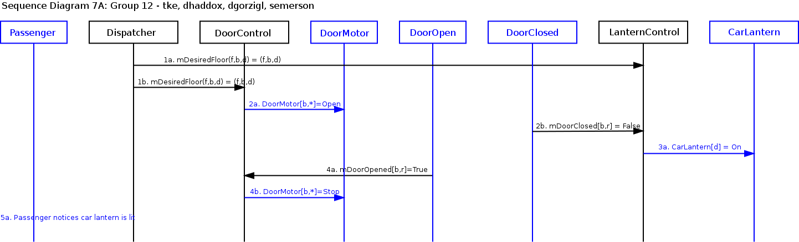
Scenario 7B: Elevator opens doors
when Dispatcher's intended direction is stop. Passenger arrives at the hallway
when the elevator is already there
Pre-Conditions:
- Elevator is stopped at floor f, and AtFloor[f,b]
was
last
received as True.
- Dispatcher intends direction Stop (i.e., no selected
direction), with enabled pickup in hallway b.
- All doors are closed.
- Both Car Lanterns are off.
- CarCall[f,b] is True for floor f and hallway b
Scenario:
- Passenger arrives at hallway [f, b]
- Elevator doors open in hallway b on floor f
Post-Conditions:
- Passenger is in hallway [f, b]
- Elevator is at passengers floor
- Both Door[b,*] are open
- Both car lanterns are off
Sequence Diagram:
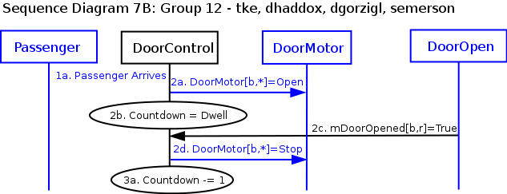
Scenario 7C: Elevator
doors close on a hallway.
Pre-Conditions:
- Both doors [b,*] in hallway b are open.
- Car is at floor f
- Dispatcher intends direction d
- There is a car call and both hall calls in hallway b
- DoorHasReversed is false
Scenario:
- Dwell counter expires
- All doors close
- Car Light [f,b] turns off, Hall Light [f,b,d] turns off
Post-Conditions:
- All doors are closed
- CarLantern [f] is off
- HallLantern [f,b,d] is off
Sequence Diagram:
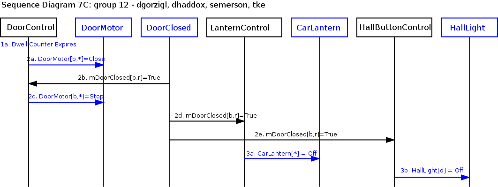
Use Case 8: Dispatcher Moves Car to
Next Floor
Scenario 8A: Dispatcher moves the elevator from {floor f, hallway b} to
{floor g, hallway c} in direction d.
Note: You will want to create other scenarios that involve fast
speed for your elevator, but this is a starting point.
Pre-Conditions:
- Elevator is at floor f (mAtFloor[f,*] = true), with at least one Door[b,r]
open.
- Drive is stopped.
- CarLantern is lit indicating direction d
- Both level sensors are true
- The countdown for the doors has expired
- There is a car call at hallway c on floor g
Scenario:
- Door[b,*] closes.
- Car lantern turns off.
- Dispatcher sets desired floor to g
- Drive is set to speed level and direction d, and car position updates.
- Drive is set to speed slow and direction d.
- Drive is set to speed fast and direction d.
- Commit point for floor g is reached.
- Drive is set to speed slow and direction d.
- The car reaches floor g
- Drive is set to speed level and direction d.
- The elevator arrives at floor g and the car is level
- Drive is set to stop
Post-Conditions:
- Elevator is at floor g
- Both doors are closed.
- CarLantern[d] is off
Sequence Diagram:
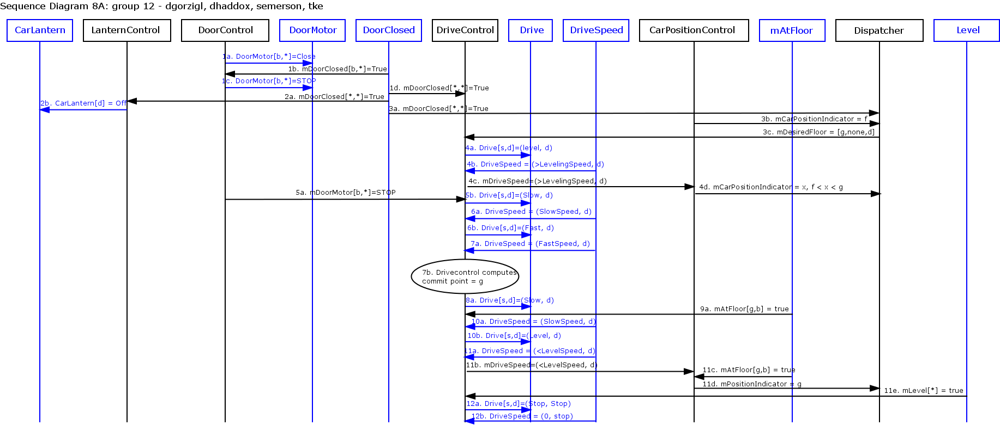
Use Case 9: Dispatcher Cycles
Doors
Scenario 9A: Elevator stops at hallway and doors open, then start closing. Dispatcher computes next desired floor just as doors complete closing.
Pre-Conditions:
- Car is stopped at floor.
- All doors are closed.
- There is a pending call for this floor and dispatcher is enabling pickup.
Scenario:
- Dispatcher sets mDesiredDwell.
- Door[b,*] both open.
- Passenger gets on elevator, and does not press any buttons.
- Door[b,*] both close.
Post-Conditions:
- Car is stopped.
- All doors are closed.
Sequence Diagram:
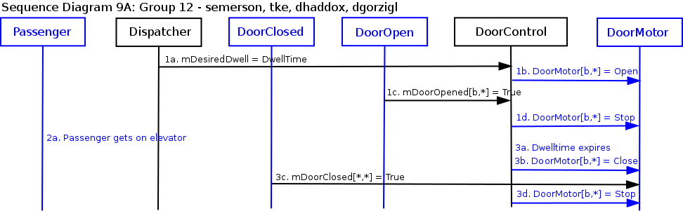
{kind=link}
{kind=link}
{kind=link}
{kind=link}
{kind=link}
{kind=link}
{kind=link}
{kind=link}
{kind=link}
{kind=link}
{kind=link}
{kind=link}
{kind=link}
{kind=link}
{kind=link}
{kind=link}
{kind=link}
{kind=link}
{kind=link}
{kind=link}
{kind=link}